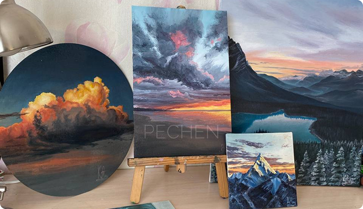

<div
  class="proccess__container max-sm:mb-[11px] max-lg:px-[15px] rounded-[12px] flex flex-col font-proxima pl-[165px] pr-[230px] mt-[48px]"
>
  <div class="proccess__caption 2xl:justify-center flex items-center gap-[12px]">
    <svg class="icon video__arts max-sm:w-[18px] max-sm:h-[18px] w-[25px] h-[25px]">
      <use href="#icon-videoArts"></use>
    </svg>
    <p
      class="proccess__caption-text max-sm:tracking-[1.2px] max-sm:text-[14px] tracking-[1.6px] bg-gradient-to-r [-webkit-background-clip:text] [-webkit-text-fill-color:transparent] from-ui-colorBlue to-ui-colorPurple font-bold text-[18px] leading-[26.5px]"
    >
      PROCCESS
    </p>
  </div>
  <div class="proccess__content max-sm:mt-[20px] flex justify-center mt-[24px] relative">
    <div class="proccess__wrapper rounded-[12px] relative w-[1045px]">
      
      <div
        class="proccess__overlay backdrop-blur-md rounded-[12px] absolute top-0 left-0 w-full h-full bg-ui-backgroundLanguage/80"
      ></div>
    </div>

    <div
      class="proccess__info max-sm:mt-[2px] max-xl:justify-center max-xl:h-full max-xl:pt-[0px] ml-[1px] pt-[228px] flex flex-col items-center absolute z-10 top-0"
    >
      <p
        class="proccess__info-caption max-sm:tracking-[1.4px] max-lg:text-[14px] tracking-[1.8px] text-[18px] leading-[26.5px] font-bold bg-gradient-to-r [-webkit-background-clip:text] [-webkit-text-fill-color:transparent] from-ui-colorBlue to-ui-colorPurple"
      >
        avalaible for premium
      </p>
      <h3
        class="proccess__info-title max-lg:text-[22px] flex gap-[16px] items-center text-[26px] leading-[33.5px] font-bold text-ui-primary"
      >
        <svg class="icon lock__arts max-sm:w-[24px] max-sm:h-[24px] w-[40px] h-[40px]">
          <use href="#icon-ArtsLock"></use>
        </svg>
        CONTENT LOCKED
      </h3>
      <div
        class="proccess__items max-sm:mt-[16px] max-sm:ml-[6px] max-sm:pl-[27px] max-sm:rounded-[12px] max-sm:pr-[27px] max-sm:py-[12.8px] mt-[18px] py-[19px] pr-[15px] pl-[30px] rounded-[16px] inline-flex bg-ui-backgroundLanguage"
      >
        <a
          href=""
          class="proccess__items-link max-lg:text-[15px] font-bold text-[18px] leading-[26.5px] flex items-center gap-[9px] bg-gradient-to-r [-webkit-background-clip:text] [-webkit-text-fill-color:transparent] from-ui-colorBlue to-ui-colorPurple"
          >Unlock
          <svg class="icon lock__arts w-[24px] h-[24px]">
            <use href="#icon-arrow"></use>
          </svg>
        </a>
      </div>
    </div>
  </div>
</div>
